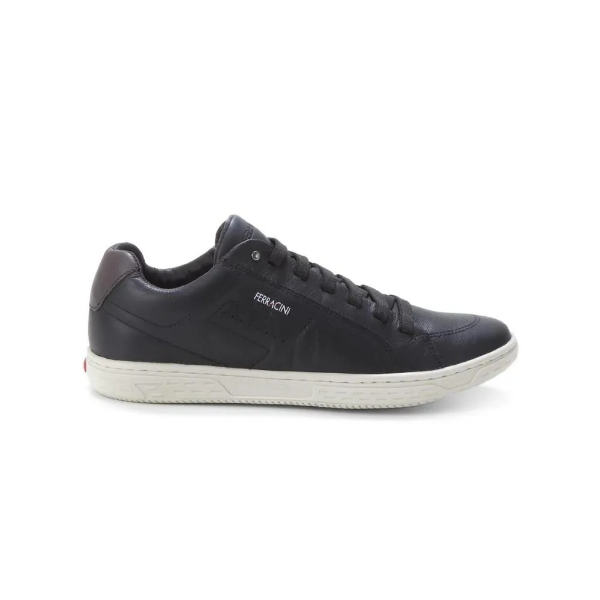

FRETE GRATUITO PARA TODO O BRASIL

Sapatênis Masculino Ferracini
Tênis Ferracini Liso Preto
Código: 00007
Por R$ 284,25
ou até 8x de R$ 35,53
Sobre o Sapato
• Bico redondo
ESTILOSO E CONFORTÁVEL:
Item indispensável no guarda-roupa, o tênis é perfeito para quem busca estilo e conforto. São versáteis, atemporais e possuem modelos que vão bem nos mais diversos estilos, do street ao casual. Aposte em modelos básicos que combinam com qualquer ocasião, ou em peças coloridas com acabamentos e aplicações variadas para um visual despojado e estiloso.
Sobre a marca:
A Ferracini é uma das maiores empresas de calçados e acessórios masculinos do país. Seus produtos aliam qualidade e conforto, com modelos inspirados na necessidade do homem contemporâneo.